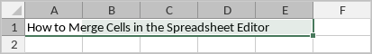
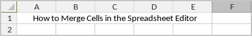
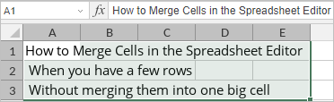
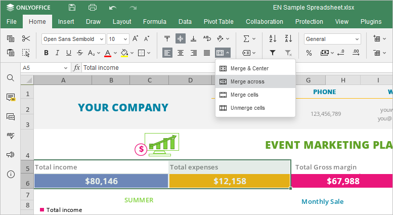
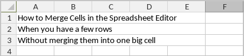
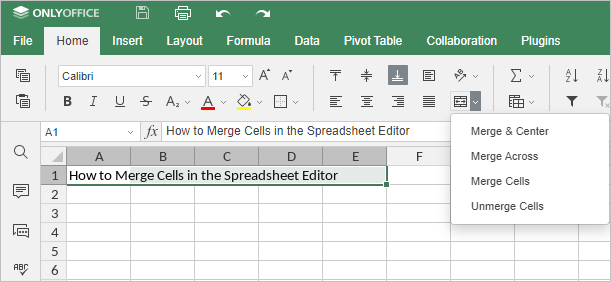
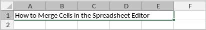
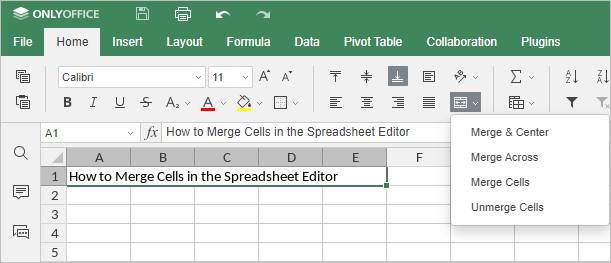

Spajanje ćelija
Ako je potrebno da spojite ćelije kako biste bolje pozicionirali tekst (npr. naziv tabele ili dugačak tekstualni fragment unutar tabele), koristite alat Merge u ONLYOFFICE Spreadsheet Editor-u.
Tip 1. Spoji i centriraj
-
Kliknite na ćeliju na početku potrebnog opsega, držite levi taster miša i prevlačite dok ne izaberete željeni opseg ćelija.

Izabrane ćelije moraju biti susedne. Samo podaci iz gornje leve ćelije izabranog opsega biće sačuvani u spojenoj ćeliji. Podaci iz ostalih ćelija izabranog opsega biće obrisani.
-
Idite na karticu Home i kliknite na ikonu Merge and center .

Tip 2. Spoji po redovima
-
Kliknite na ćeliju na početku potrebnog opsega, držite levi taster miša i prevlačite dok ne izaberete željeni opseg ćelija.

-
Idite na karticu Home i kliknite na strelicu pored ikone Merge and center da biste otvorili padajući meni.

-
Izaberite opciju Merge Across da biste poravnali tekst ulevo i sačuvali redove bez njihovog spajanja.

Tip 3. Spoji ćelije
- Kliknite na ćeliju na početku potrebnog opsega, držite levi taster miša i prevlačite dok ne izaberete željeni opseg ćelija.
-
Idite na karticu Home i kliknite na strelicu pored ikone Merge and center da biste otvorili padajući meni.

- Izaberite opciju Merge Cells da biste sačuvali prethodno podešeno poravnanje.
Razdvajanje ćelija
-
Kliknite na spojeno područje.

-
Idite na karticu Home i kliknite na strelicu pored ikone Merge and center da biste otvorili padajući meni.

- Izaberite opciju Unmerge Cells da biste vratili ćelije u njihovo originalno stanje.